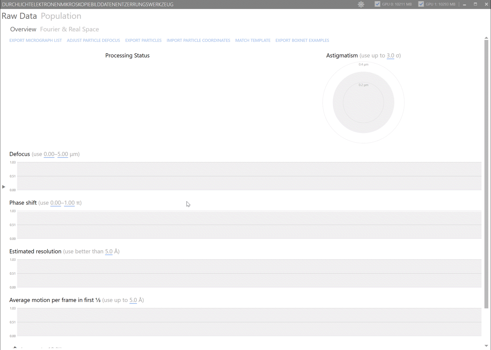
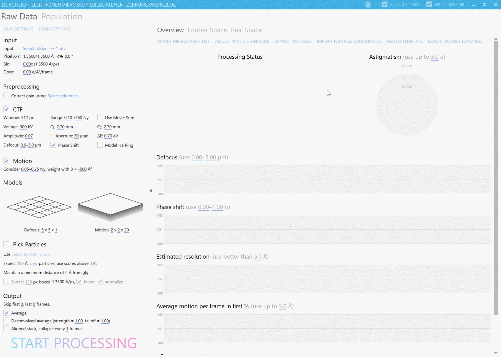
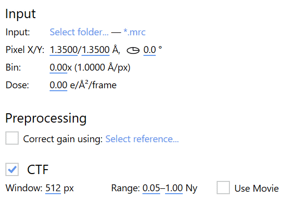
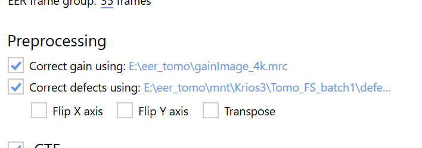
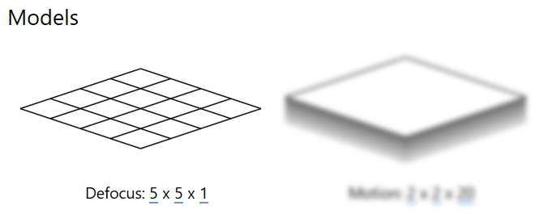
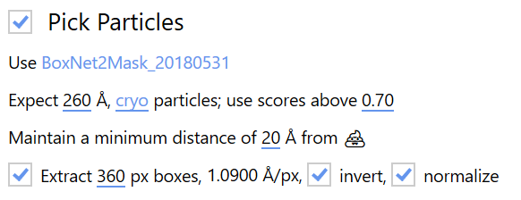
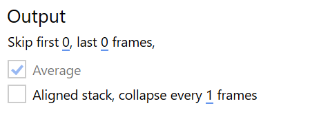
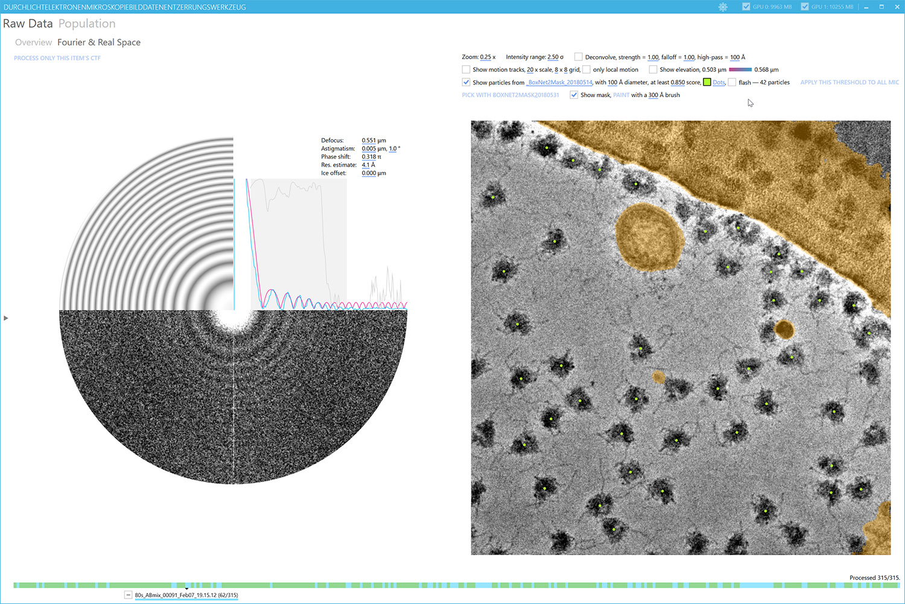
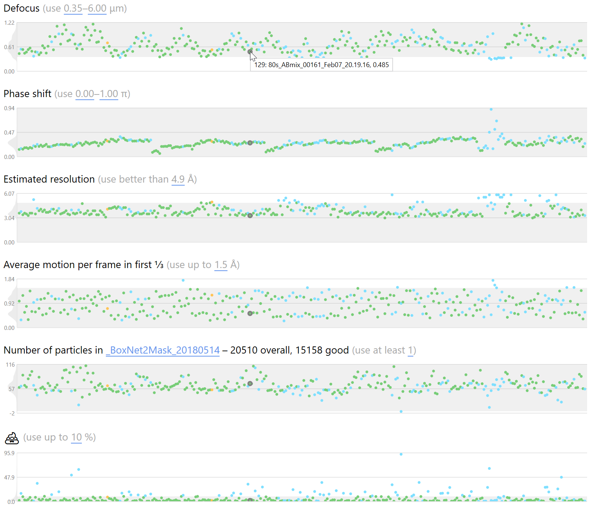

Quick Start: Frame Series
This quick introduction can help you start processing frame series data (2D movies) with Warp right away, without diving into details.
To the microscopes, ready, go!
Load your favorite sample into the microscope and start collecting data. For counting data from K2/3 and Falcon III detectors, we highly recommend saving the movies as gain-uncorrected, compressed TIFF files. This will make sure a typical SPA movie with 40 frames doesn't take up more than 200 MB and you don't need to purchase a new file server every now and then. If you're using SerialEM or other software with native TIFF support, this can be done with a few clicks. If you're using EPU, our Stacker v2 tool will help you.
If you don't have access to a microscope right now, grab a data set from EMPIAR, e.g. 10153. This tutorial will use EMPIAR-10153 for all of its screenshots.
Launch Warp and get comfortable
Once a steady influx of movies is ensured, you can launch Warp. Just go to the installation directory and execute Warp.exe. The first launch can take a bit longer – please be patient.
If you don't see the settings panel on the left side, click the small triangle to expand it. Collapsing the settings panel will merge the Fourier and Real Space tabs – you may find this mode more convenient for manually screening the processing results.

If you're a vampire, click the 🔄 button in the window bar to change to a dark UI theme. We won't judge 🧛

Setup
Input parameters

First, you need to tell Warp where to look for data, and what basic input parameters to expect. These settings are located in the left part of the window under Input.
Click Select folder… and select the location of your movies. Warp will not look for files recursively in sub-folders, so all files must be located on the top level. Next, click .mrc (the extension may be different if you've already used Warp) to specify the file format. If you're working with a header-less format (or any format Warp doesn't recognize yet), select the DAT option, and specify the frame dimensions, data type and an optional offset at the beginning of the files. Only the .dat extension is supported for the file names, but you can use any header-less format by renaming them.
Set the pixel size in the X and Y dimensions to match your raw, unbinned data. If you haven't determined the magnification anisotropy for your microscope, both numbers will be the same. The anisotropy angle specifies the anti-clockwise rotation of this X/Y coordinate system.
Especially if you're acquiring in super-resolution mode on a K2, you might want to bin the data before they are processed. We don't think the processing overhead for super-resolution data is worth the small gain in signal, but you are free to experiment 😉 Warp can use any positive rational binning factor. The frames will then be Fourier-cropped to Size / 2^n.
If you enter any non-zero electron dose value, frames will be weighted in all operations that produce averages, e.g. aligned movie or particle averages. The weighting is implemented as a B-factor of –4⋅Dose Ų. Please don't forget to convert the dose value to the correct units.

Following the best practice of storing counting data as gain-uncorrected integer values, you need to tell Warp how to perform gain correction on-the-fly. Click Select reference… and choose an MRC file. Please make sure the gain reference matches the data. In case of EER data, the size of the gain reference also determines the super-resolution – check the EER page for details. Warp will tell you if the dimensions don't match (e.g. if it needs to be transposed), but it can't detect if the reference is flipped in X or Y. If you're not sure, try processing a movie without motion correction and check whether the average contains a visible gain pattern. Repeat the procedure with different combinations of Flip X/Y axis until the pattern disappears.
Some camera sensors have small defective regions that can't be corrected using a gain
reference. They won't affect alignments if they're small, but can be annoying,
especially in tomography. Warp can use a defect map to fill those regions with the
average value of their surroundings. The defect map must have the same dimensions as the
gain reference, and contain pixel values = 1 in the defect regions and = 0 everywhere
else. The same flip X/Y and transpose operations will apply to the gain reference and
defect map. Alternatively, you can have Warp create the defect map image based on a text
description of rectangular regions. To do this, click Select defect map, change the
file filter to * .txt, and select the text file. In this file, every line should
describe a rectangle in the following
format: [bottom left corner X] [bottom left corner Y] [width] [height]
The X and Y coordinates start with 0, not 1. The columns are separated by spaces or tabs. For instance,
0 3709 3838 1 will mask the top-most row of a 3838×3710 px sensor. Once the file
is loaded, Warp will generate the defect map image and save it
under project directory/defectmap/defects.tif and automatically change the file path.
Please check this image to make sure the mask is correct. For future projects using data
from the same sensor, you can just reuse this TIFF file.
CTF fitting options
The number of parameters for CTF fitting can be scary at first. Good news: You need to set many of them only once for your microscope!

-
Window: Specifies the size of the power spectrum. If you expect only low defocus values or need highly localized defocus values, leave the window small, e.g., 512 px.
-
Range: Specifies the spatial frequencies used for fitting. It is usually best to ignore the lowest frequencies. If you specify a defocus model without spatial resolution (see next section), you can set the maximum range to 1.0. If you are fitting a highly resolved model, keep the maximum value lower to prevent overfitting.
-
Use Movie Sum: In some cases (e.g., very low dose images) the fitting will work better if the power spectrum is created from the aligned movie average instead of the per-frame power spectra – check this option to do that.
-
Voltage and CS: Values specific to your microscope model. A Titan Krios is usually operated at 300 kV, and CS is 2.7 mm in most modes.
-
CC, Illumination Aperture, and ΔE: Currently not used, but might become relevant in future versions of Warp. Just leave the defaults for now.
-
Amplitude: Defines the fraction of amplitude contrast in the CTF. Commonly used values for cryo data are 0.07 and 0.10, while negative stain data are often fitted with 0.20.
-
Defocus spread: Defines the range of defocus values for the initial exhaustive search. Set both values to match the range specified in your acquisition software with a bit of a margin.
-
Phase Shift: When dealing with data acquired with a phase plate, check this to fit that parameter as well.
-
Mode Ice Ring: An experimental feature that will attempt to model the CTF around the 3.6 Å amorphous ice ring separately from the rest of the power spectrum.
Range parameters optimization: The easiest way to optimize them for a new data set is to switch to the Fourier Space tab and click Process Only This Item's CTF. This will skip all the other processing steps and just fit the CTF for the currently selected movie. The fitting range is visualized as a grey rectangle in the 1D power spectrum plot.


CTF Model Resolution: Defined further below in the Models panel. The first two values define the spatial resolution, i.e., how locally the defocus will be estimated. 5x5 is usually a good value for a 4K micrograph at 1.0–1.3 Å/px. The third parameter defines the temporal resolution. Please note that a temporal resolution higher than 1 leads to a vastly increased memory footprint during processing, while probably not improving the final resolution in most cases.
Motion fitting options

-
Global and local motion estimation: Considers the specified range of spatial frequencies and weights their importance according to the B-factor. The default range of 0.05–0.25 is usually ok for data with 1.00–1.35 Å/px. The more negative the B-factor, the less the higher spatial frequencies will be considered.
-
Motion model parameters: The first two parameters describe the spatial resolution, and the third describes the temporal resolution. The spatial resolution will be considered in fitting the local beam-induced motion, while the full specified temporal resolution will be used for fitting the global motion.
Particle picking options
Warp employs BoxNet, a deep convolutional neural network, for particle picking and maintains a central database of training data that any user can contribute to. As new examples are added, the BoxNet model is constantly re-trained using all available data. In addition to this, BoxNet can be re-trained locally on any data you would like to pick more specifically. Thus, while the concept of sample-specific templates does not exist with BoxNet, you can maintain multiple pre-trained models for different samples. More information on how to re-train BoxNet can be found here.

Click Select BoxNet model... to open a list of available models. All models contained in [WarpInstallationDirectory]/boxnet2models/ are enumerated here. If you just installed Warp recently, the list of official BoxNet models pre-trained only on the public dataset should be up-to-date. If your installation is a bit older, click Browse Public Repository to download the latest versions. After downloading new models, please re-open the model selection window to see the changes. Once a model is selected, click Use ( or follow the re-training guide).
There are 2 types of official BoxNet models: One follows the BoxNet2_ naming scheme and can only distinguish between background and particles. Another is called BoxNet2Mask_ and can distinguish between background, particles, and high-contrast artifacts, e.g., ethane drops. Knowing the exact location of such artifacts allows dismissing particles located too close to them.

The Diameter setting controls how close two particles can be together before the particle with lower probability is dismissed from the picks. The Data Type determines whether the sign of the data is flipped before picking (negative stain), or not (cryo). A Minimum Score threshold is applied to BoxNet's predictions. When using a model specifically pre-trained on the current protein species, the score can be typically left at its default value of 0.95. Picking new species with the generic version can sometimes require lower threshold values to pick up everything.
If you're using a BoxNet version that can create masks, you can enforce a Minimum Distance between particles borders (as defined by their diameter) and 📩.
The picked particles can be extracted immediately after the picking, which is especially useful for real-time processing. For that, the Box Size must be set – ca. 150 % of the particle diameter is recommended to avoid interpolation artifacts later. The pixel size is fixed to that used for the entire pre-processing pipeline. If you want to extract particles with a different pixel size, you can do so later using one of the Task Dialogs. Cryo data need to be inverted upon extraction. For SPA packages that require particles to be pre-normalized, e.g., RELION, the diameter used for picking will also be used for * background normalization*.
Output options

The first few frames in a movie suffer especially badly from beam-induced motion and can usually be discarded by adjusting the output frame range. This setting will also be respected in all other operations that deal with frames, e.g., particle extraction.
In addition to extracted particles, there are 2 output types for 2D movies:
- Average: You will almost always want to produce an average to inspect the micrographs visually. You can also use other tools to extract particles from them if you don't want to use Warp for that.
- Aligned Stack: Some workflows – RELION pre-3.0 particle polishing in particular – rely on pre-aligned movies as input. Please note that aligned movies are very large and will create significant storage and processing overhead. To save some space, you can collapse groups of consecutive frames into one.
Processing
Start processing

You're almost ready to hit that big button! We just need to make sure that all of the GPUs in your system are as ready as you are. Warp will try to use all CUDA-capable Nvidia GPUs available, which might not be a good idea if you have several models with different memory capacity. They are all listed in the window bar together with checkboxes to deselect them. Deselected GPUs will not be used for on-the-fly processing. version's memory requirements.
Now hit it! Warp won't stop processing until you manually press Stop Processing. All processing settings and task dialogs are frozen while Warp is in processing mode, but you can still inspect the results, edit the particle positions, and change any filter thresholds.
Processing status

As movies are processed, they change their status. Every movie is initially marked as * unprocessed. Once it has passed through the entire pipeline, it is considered * processed. If you change any processing settings, previously processed items will be marked as outdated, i.e., in need of re-processing. If a processed item's quality criteria don't match the current filter thresholds (see section below), it is labeled * *filtered out. Finally, if you deselect an item manually in the navigation bar, it will be colored as deselected. This color scheme is used throughout the navigation bar and the overview tab, except in the astigmatism plot. There, color reflects an item's coordinate on the time axis, going from old to new. Whenever unprocessed or outdated items are present in the current input folder and processing is activated, Warp will send them through the pipeline in alphabetical order.
Inspecting results
Once the processing has started, it is best to collapse the settings panel as shown in the beginning of this guide. This will make more room for the overview plots, and merge the Fourier and Real Space tabs so you don't have to constantly switch between them.

The Overview tab features plots for all estimated parameters. If the dot spacing becomes too dense, use the mouse wheel to zoom into the plots. Each plot features a small histogram on its left side. Click any of the dots to switch to the Fourier & Real Space tab and inspect the corresponding item in more detail.

There, you will find the Power Spectrum and its CTF Fit, an Average of the aligned movie and the corresponding Local Motion Tracks, the picked Particles and the automatically painted Mask, and the local Defocus Gradient. Some of these elements are hidden by default so they don't clutter up your view.
If your GPU has 8+ GB of memory, you can enable Denoising to see more details in the noisy images. Warp comes with a default pre-trained denoising model, but it will likely not be as good as one trained on your specific data set. To retrain the model on your data using the noise2noise method, wait until at least 20–30 movies have been processed (up to 128 can be used). Then stop the processing to free up GPU resources. Now click Retrain on this data set next to the Denoise checkbox and proceed through the dialogs. Once training is finished, you can activate the denoising if it isn't active yet, and proceed with the processing. In very rare cases it may be necessary to restart Warp after retraining to avoid crashes. The retrained denoising model will be saved in the project directory and used automatically for this project in the future.
Alternatively, you can enable the Deconvolution Filter and adjust it on-the-fly to give your micrographs more contrast. If the latter is too much, you may need to adjust the Intensity Range slider.
While in the Fourier & Real Space tab, you can quickly go through your micrographs using the ⬅️ and ➡️ keys on the keyboard.
Dealing with 💩
Even a perfect grid will produce a bad micrograph every now and then. Wouldn't it be great to get rid of them in an objective and automated way?


Some of the parameters established during processing are likely correlated with the data quality: Defocus, astigmatism, phase shift, estimated resolution, average intra-frame motion, number of particles, and the percentage of masked micrograph area. Using the sliders above the plots in the Overview tab, you can define Filter Thresholds for all of them. Whenever you change a threshold, Warp instantly re-applies it to all items. The Astigmatism filter is special because it considers the distance of a movie's astigmatism to the entire data set's mean astigmatism, normalized by its standard deviation. Thus, whenever an item's astigmatism value changes, the entire filter is re-evaluated without an explicit change in the threshold.

In some rare cases, you may want to overrule the automatic filtering. Each item has a * Manual Selection flag in addition to the filtering. To edit it, switch to the Fourier or Real Space tab. You will find the Navigation Bar at the bottom of the window. There, the currently selected item has a check box next to its name. This check box has 3 different states, which are cycled through by repeatedly clicking it: [–] ( default) leaves the inclusion/exclusion to the automatic filters; [✓] forces inclusion regardless of filters; [ ] forces exclusion regardless of filters. Alternatively, you can press F* on the keyboard to change the current item's selection.
🔌 Plugging Warp into other tools
Now that Warp is running and providing you with lots of insights into your ongoing data collection, what's next?
If you set up Warp to pick particles on-the-fly using BoxNet, it will create and continuously update two files in the input folder: allparticles_BoxNetName.star and goodparticles_BoxNetName.star. The former contains absolutely all particles picking with the respective BoxNet model so far, while the latter only contains particles from micrographs that match the current filter thresholds. Whenever you change the filter parameters, the goodparticles file will be updated the next time Warp is done processing a movie.
cryoSPARC is our favorite tool for processing Warp's on-the-fly results because of its speed and transparent handling of constantly changing data sources.

Create a new data source for your project and select goodparticles_BoxNetName.star in
Warp's input folder as cryoSPARC's Meta Data File. Set the other data set parameters
as usual. That's it! Now, whenever you create a new job with the full data source as
input (i.e., not using the output of a previous job as input), cryoSPARC will read the
most current version of the STAR file, load all new particles into its local cache, and
use them for processing.

At the beginning of a data collection session, we like to start 2D Classification jobs every 30 minutes. If the data are good, well-defined classes should appear soon. After a few hours, we employ Ab Initio jobs to bootstrap the 3D classification and, once we have good classes, 3D Refinement. This way, it usually becomes clear after only a few hours of data collection if it's worth continuing, or if a different sample should be loaded into the microscope instead.
Warp's STAR files are also fully compatible with RELION. While its current processing speed makes for a less responsive on-the-fly workflow, we usually employ it once data collection is over to classify and refine the data further.